Three directions · One fixed room · 21 October 2026
Unit 408 — three bedroom directions (G, H, I)
Three more fully sourced directions for Isah and Ivan, distinct from all twelve earlier schemes (BUD, DIST and ND A–C; D, E, F) and from the sibling sets JKL and MNO: G Graphite Steel — black steel, chalk, felt; H Travertine Blush — stone and blush; I Plum Lacquer — dark lacquer, plum, smoked glass. Every visible piece is a real catalogue product judged on its supplier photo; technical essentials stay common by agreement.
A comparison for one chosen scheme. Quantities and budgets apply to that scheme. Star (☆) any piece in the schedules to collect it under Picks.
Graphite Steel
₱452,000–₱506,000Planning range Direction HTravertine Blush
₱428,000–₱482,000Planning range Direction IPlum Lacquer
₱356,000–₱410,000Planning rangeThe fixed brief
What every scheme must satisfy
- 01
MANDATORY: finished 50 mm mattress, 72 × 78 inches (1828.8 × 1981.2 mm), on continuous flat support with no exposed slats or gaps. No thick mattress, topper or box spring.
- 02
All prices assume new purchases. Three distinct sets of visible furniture, bedside lamps, fixtures, mirrors, rugs, textiles, plants and decor. Matching bedside pairs within each design.
- 03
Closed practical bedside storage, armrests on every chair, compact console with sourced decor. No extra generic styling objects.
- 04
75-inch wall TV baseline; 65-inch minimum, 85-inch optional pending price and clearance checks. 65-inch reference saves ₱12,000 in merchandise before contingency.
- 05
Split AC at the window-side corner of the TV wall, with airflow directed away from sleepers. Installer must verify location and capacity.
- 06
Mirror on the wall return between the two perpendicular doors. Preserve native irregular geometry, both doors, closet and warm narrow-block parquet.
- 07
Common technical essentials are owner-approved. Existing Davies Beige blackout/voile treatment and concealed old window AC remain a fixed room requirement.
Direction G
Graphite Steel
Chalk-white tufted Gavino bed and a plain white duvet against anthracite powder-coated steel: GRÅFJÄLLET door bedsides, a FJÄLLBO mesh-door console and a slim black floor mirror. A graphite embossed-felt Kartell Clap armchair, a storm-grey chunky wool cushion and a grey-black TANNISBY kilim give the felt-and-wool texture. Light is directional: two black Tripod HM9 angled task lamps and a dark HEKTAR industrial pendant. Two brushed-black frames over the bed hold the owners' own black-and-white photographs; a spiky agave in a cement bowl softens the console. Squint phrase: black steel, chalk, felt.

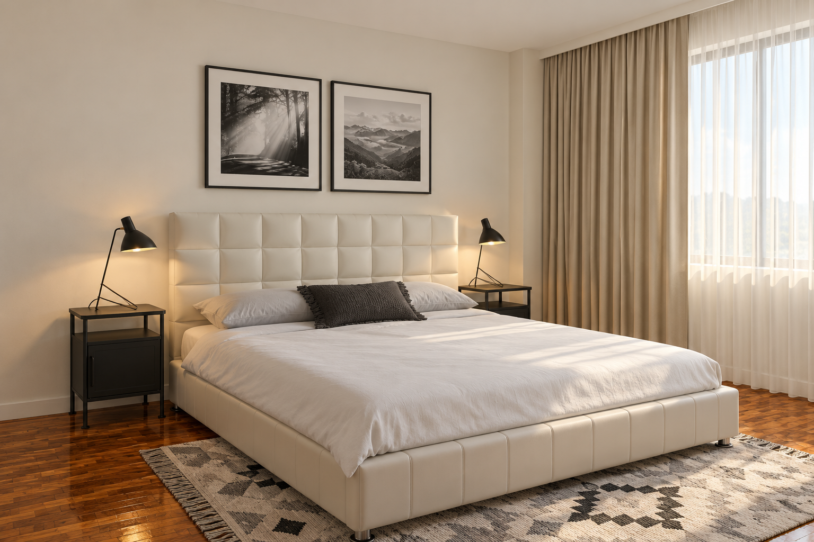

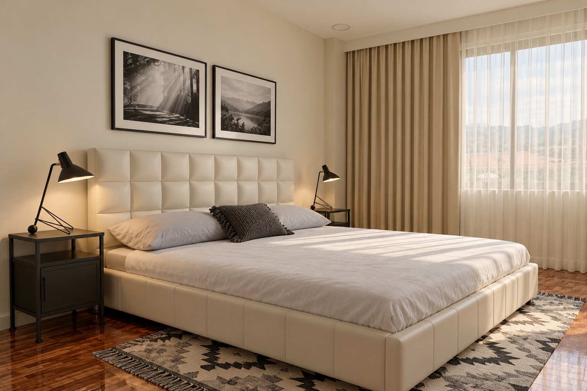

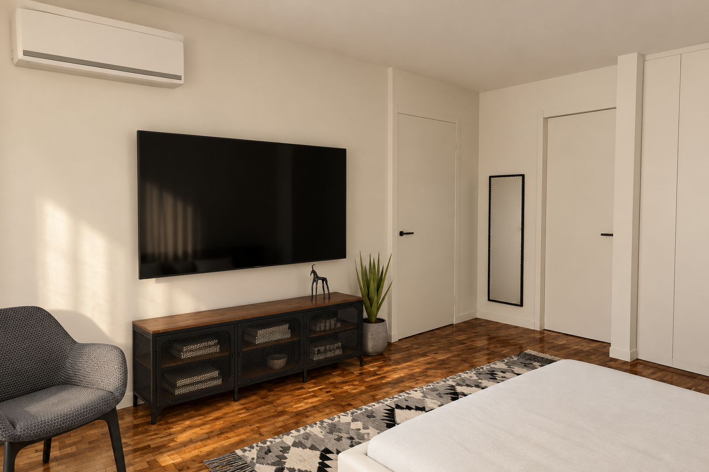
Style renders are AI images (Codex image generation, sketch-to-render) painted over the dimension-led model views below, with the original parquet photo and the supplier product photos as references: a style interpretation of each scheme, not a dimension certification; check every piece against the schedule.

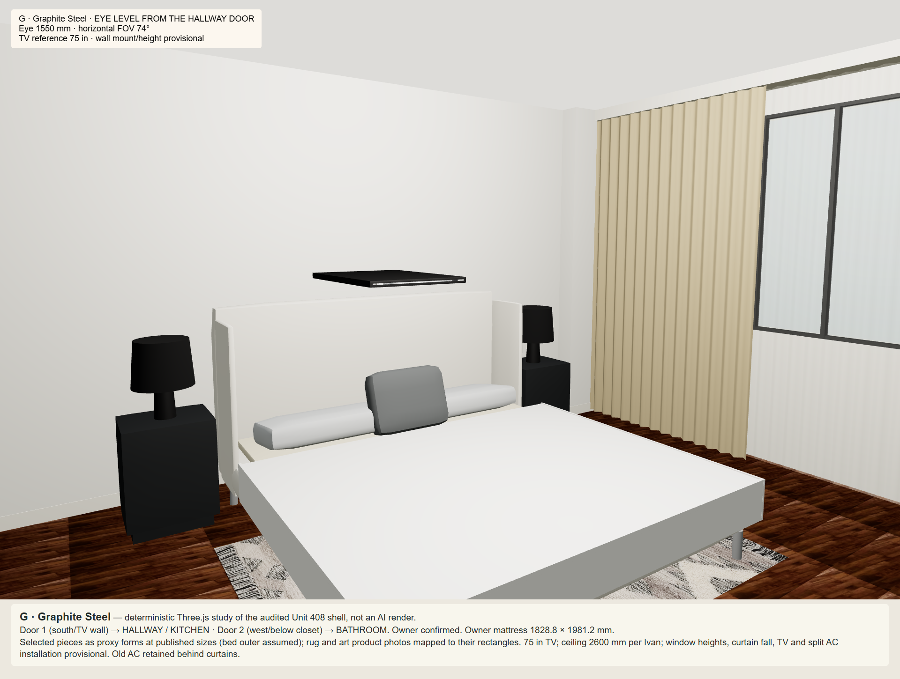

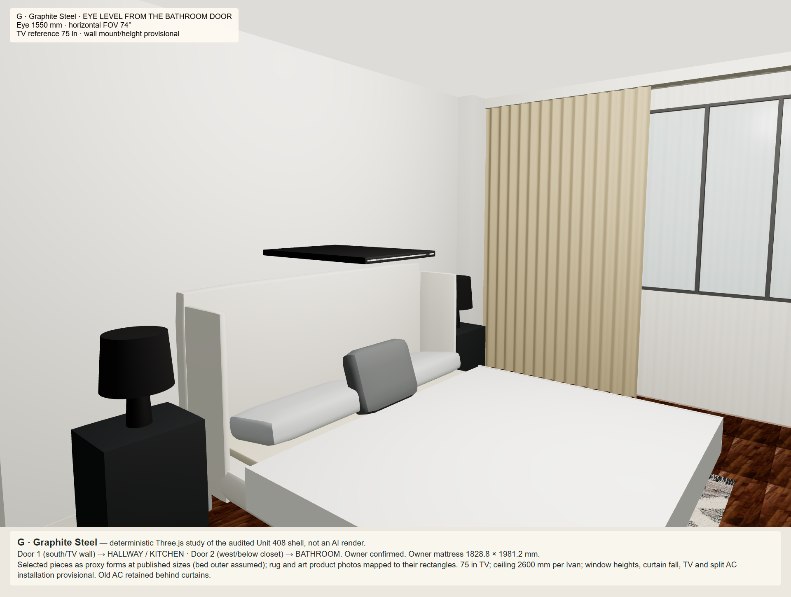

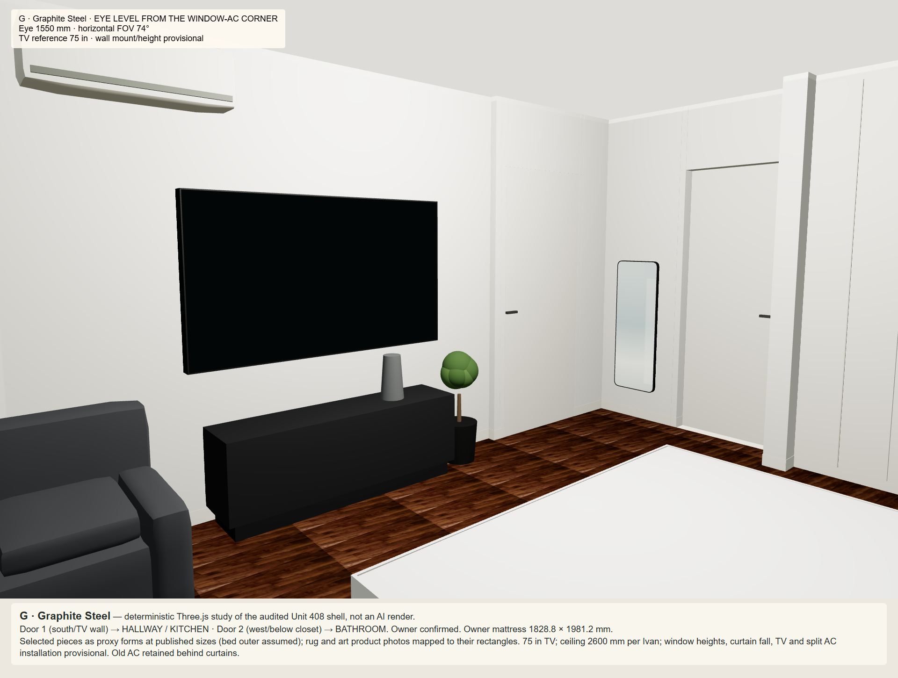
Model views are deterministic Three.js views of the audited Unit 408 shell (parquet, curtains, window, doors, closet, 75 in TV, new split AC) with the selected pieces as proxy forms at published or assumed sizes and the rug and art photos mapped to their rectangles; not AI renders, finishes approximate.
Elevations are scaled supplier-photo collages on the native wall, not renders; heights ILLUS. The reference board contains supplier product photographs.

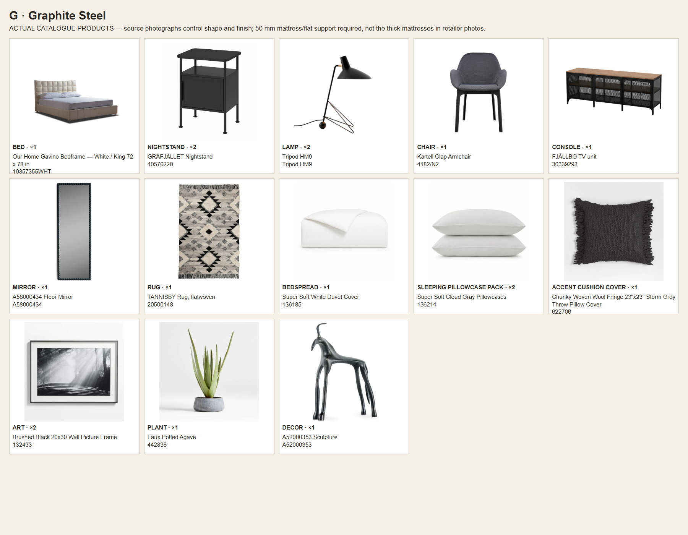

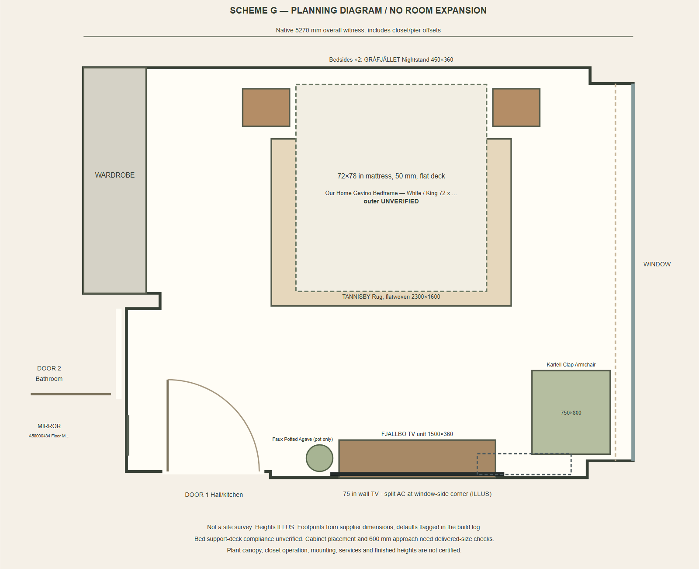
Space & fit
- GRÅFJÄLLET bedsides 450×360 each side of the Gavino King; Gavino outer size not published, fit uses the mattress envelope.
- FJÄLLBO 1500 mm console passes the ≤1600 mm short-console rule on the TV wall.
- A58000434 floor mirror 387 mm wide on the 690 mm door return leaves ≈ 150 mm each side.
- Kartell Clap armchair footprint unpublished (compact dining-lounge shell); confirm ≤ 850 mm in the window corner.
Every scheduled itemDirection G · selected pieces13 rows
13 scheduled items
| Starred | Piece & exact variant | Qty / scheme | Unit price | Line price | Source & fulfillment |
|---|---|---|---|---|---|
bedOur Home Gavino Bedframe — White / King 72 x 78 inWhite / King 72 x 78 in Dimensions & source notesNotes: PU leather bed with a tall grid-tufted headboard and tufted base on short steel feet. Supplier photos show only White; Steel/Black exist as variants without a photo, so White is specified to match the photo. Supplier JSON shows available=false: stock gate. Deck continuity for a 50 mm mattress UNVERIFIED → REQUIRED-FLAT-DECK applies. Price basis: Our Home Shopify product JSON, King 72×78 variant |
1G | ₱44,950Source price: 2026-10-21 | ₱44,950 | Supplier JSON available=False (read 21 Oct 2026) | Cebu delivery unconfirmedSupplier page ↗ | |
 nightstandGRÅFJÄLLET NightstandGRÅFJÄLLET Nightstand, anthracite, 45x36x59 cm; article 40570220 Dimensions & source notesDimensions (mm): width: 450; depth: 360; height: 590 Notes: Anthracite powder-coated steel nightstand with a closed door cabinet and top shelf, 450×360×590. Price basis: Official Philippine product-page price for the complete selected listing/variant; included quantity follows the exact specification variant. Delivery and assembly are additional. |
2G | ₱2,499Source price: 2026-09-10 | ₱4,998 | In stock according to source | Cebu delivery: unconfirmed | price date 2026-09-10 | IKEASupplier page ↗ | |
lampTripod HM9Black; retailer SKU DS001869; Shopify variant 40394816028838 Dimensions & source notesDimensions (mm): width: 180; height: 240 Notes: Black Tripod HM9: tilted metal cone shade on a slim tripod, a directional reading light. Swap for 'swing-arm' (none with a photo in the catalogue). Price basis: Per selected retailer listing variant; PHP amount matched public feed and individual product page JSON. |
2G | ₱30,000Source price: 2026-09-10 | ₱60,000 | Available online | Cebu delivery: unconfirmed | price date 2026-09-10 | &TraditionSupplier page ↗ | |
chairKartell Clap ArmchairKartell Clap; manufacturer SKU 4182/N2 Dimensions & source notesNotes: Kartell Clap armchair with arms: rounded shell upholstered in Black Graphite embossed fabric on black legs. Swap: LILLEHEM claimed first by set MNO. Price basis: Per selected official online-store variant: Kartell Clap |
1G | ₱54,446Source price: 2026-09-10 | ₱54,446 | online_variant_available_cebu_stock_unconfirmed | Cebu delivery: unconfirmed | price date 2026-09-10 | KartellSupplier page ↗ | |
 consoleFJÄLLBO TV unitTV unit, black, 150x36x54 cm (59x14 1/8x21 1/4 ") Dimensions & source notesDimensions (mm): width: 1500; depth: 360; height: 540 Notes: Black steel TV unit with mesh doors and a wood top, 1500×360×540; short console under the 75 in TV. Price basis: Per listed item/combination for exact article number |
1G | ₱9,999Source price: 2026-09-08 | ₱9,999 | Available for delivery | Cebu delivery: unconfirmed | price date 2026-09-08 | IKEASupplier page ↗ | |
mirrorA58000434 Floor MirrorA58000434 Floor Mirror; manufacturer SKU A58000434; Default Title; Black Dimensions & source notesDimensions (mm): width: 387.35; depth: 31.75; height: 1117.6 Notes: Slim black-framed floor mirror 387×1118 leaning on the door return. Swap: Aosta claimed first by set MNO. Price basis: Per exact listed official Philippine storefront variant; verify quantity/configuration in listing. Cebu branch quotation is not established. |
1G | ₱18,500Source price: 2026-09-10 | ₱18,500 | online_variant_available_cebu_stock_unconfirmed | Cebu delivery: unconfirmed | price date 2026-09-10 | AshleySupplier page ↗ | |
 rugTANNISBY Rug, flatwovenTANNISBY Rug, flatwoven, handmade/gray black, 160x230 cm; article 20500148 Dimensions & source notesDimensions (mm): width: 1600; depth: 2300 Notes: Flatwoven grey/black/off-white kilim 160×230 cm; parquet margins on all sides. Swap: STOCKHOLM family claimed first by set MNO. Price basis: Official Philippine product-page price for the complete selected listing/variant; included quantity follows the exact specification variant. Delivery and assembly are additional. |
1G | ₱15,999Source price: 2026-09-10 | ₱15,999 | In stock according to source | Cebu delivery: unconfirmed | price date 2026-09-10 | IKEASupplier page ↗ | |
bedspreadSuper Soft White Duvet CoverVariant 'Double-Queen 92x92"'; SKU 136185 Dimensions & source notesNotes: Plain white duvet cover (chalk); King/Double-Queen size to confirm. Swap: Bamboo Luxury claimed first by set MNO. Price basis: Official online store price for this exact variant (products.json variant 46557665788082: price 1055, compare-at 1055); per listed unit as titled |
1G | ₱1,055Source price: 2026-10-20 | ₱1,055 | online_variant_available_cebu_stock_unconfirmed | Cebu delivery: unconfirmed | price date 2026-10-20 | Mandaue FoamSupplier page ↗ | |
sleeping pillowcase packSuper Soft Cloud Gray PillowcasesVariant 'Pillowcase 20x30 Inches'; SKU 136214 Dimensions & source notesNotes: Cloud-grey sleeping pillowcases, 20×30 in. Price basis: Official online store price for this exact variant (products.json variant 46566380110002: price 275, compare-at 275); per listed unit as titled |
2G | ₱275Source price: 2026-10-20 | ₱550 | online_variant_available_cebu_stock_unconfirmed | Cebu delivery: unconfirmed | price date 2026-10-20 | Mandaue FoamSupplier page ↗ | |
accent cushion coverChunky Woven Wool Fringe 23"x23" Storm Grey Throw Pillow CoverChunky Woven Wool Fringe 23"x23" Storm Grey Throw Pillow Cover; Storm Grey; published SKU 622706; Shopify variant 50721043480792 Dimensions & source notesNotes: Chunky woven wool cushion cover with fringe, Storm Grey 23×23 in: the graphite felt/wool accent. Price basis: Per selected Philippine listing configuration; set quantities, covers and inserts follow exact title. Published PHP price excludes unquoted delivery/crating/assembly. |
1G | ₱4,599Source price: 2026-09-10 | ₱4,599 | Online listing available | Cebu delivery: unconfirmed | price date 2026-09-10 | Crate & BarrelSupplier page ↗ | |
artBrushed Black 20x30 Wall Picture FrameBrushed Black 20x30 Wall Picture Frame; Black; published SKU 132433; Shopify variant 43717500633304 Dimensions & source notesDimensions (mm): width: 628.65; depth: 881.888; height: 38.1 Notes: Two brushed-black aluminium 20×30 in frames side by side over the bed for the owners' own black-and-white photographs (prints to supply). Price basis: Per selected Philippine listing configuration; set quantities, covers and inserts follow exact title. Published PHP price excludes unquoted delivery/crating/assembly. |
2G | ₱9,975Source price: 2026-09-10 | ₱19,950 | Online listing available | Cebu delivery: unconfirmed | price date 2026-09-10 | Crate & BarrelSupplier page ↗ | |
plantFaux Potted AgaveFaux Potted Agave; Single listed configuration; published SKU 442838; Shopify variant 44463553085656 Dimensions & source notesDimensions (mm): width: 254; depth: 254; height: 787.4 Notes: Faux agave in a grey cement bowl, 787 high, beside the console. Swap: Monstera cement pot claimed first by set MNO. Price basis: Per selected Philippine listing configuration; set quantities, covers and inserts follow exact title. Published PHP price excludes unquoted delivery/crating/assembly. |
1G | ₱7,999Source price: 2026-09-10 | ₱7,999 | Online listing available | Cebu delivery: unconfirmed | price date 2026-09-10 | Crate & BarrelSupplier page ↗ | |
decorA52000353 SculptureA52000353 Sculpture; manufacturer SKU A52000353; Default Title; Black Dimensions & source notesDimensions (mm): width: 264.922; depth: 100.076; height: 279.4 Notes: Black metal animal sculpture 265×100×279 on the console. Price basis: Per exact listed official Philippine storefront variant; verify quantity/configuration in listing. Cebu branch quotation is not established. |
1G | ₱11,600Source price: 2026-09-10 | ₱11,600 | online_variant_available_cebu_stock_unconfirmed | Cebu delivery: unconfirmed | price date 2026-09-10 | AshleySupplier page ↗ |


Direction H
Travertine Blush
Frances bed with a big curved wraparound headboard in warm sand-taupe upholstery (listed Grey; the supplier photo reads sand), taupe percale bedding on a soft low-pile leaf rug; stone surfaces carry the room: sintered-stone Venice bedsides, a white-marble Youset console, a marble-banded Emilia mirror and a stone-textured round wall piece. Blush is the single accent, on one coral-blush striped cushion and one blush-banded ceramic vase. Light is frosted: opal-globe Journey SHY1 bedside lamps and a three-globe SIMRISHAMN opal pendant. A soft beige Heather armchair with a back pillow sits in the window corner. Squint phrase: stone and blush.

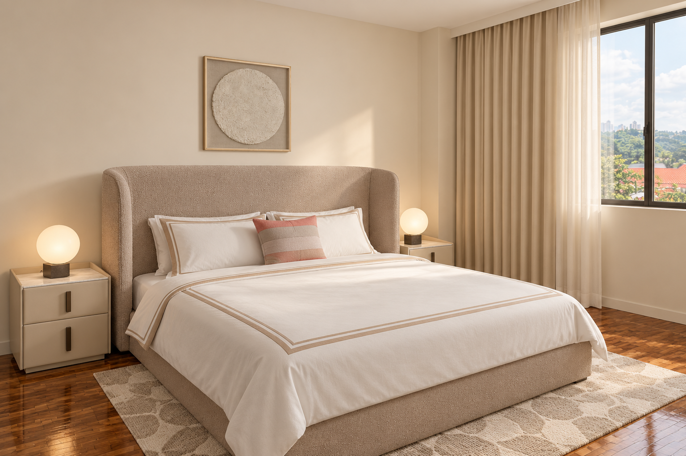

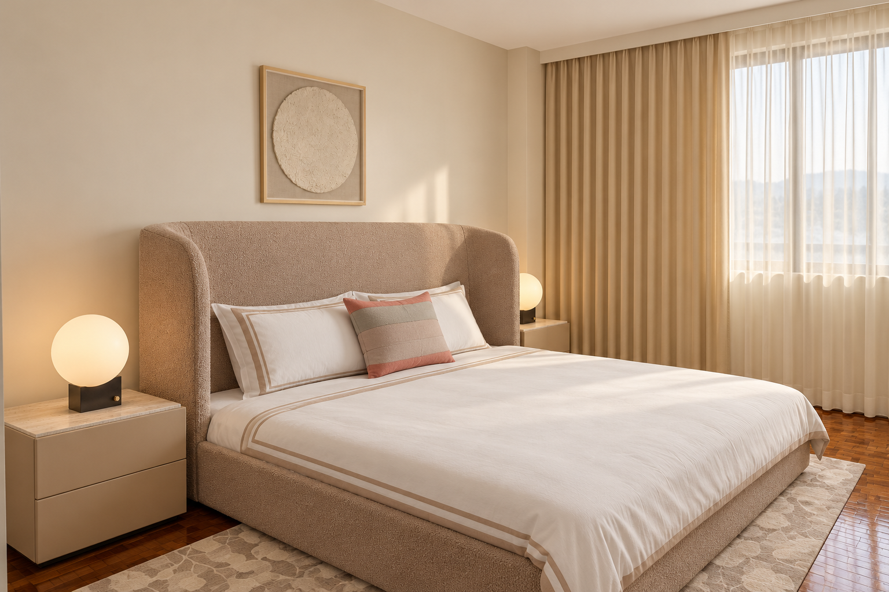

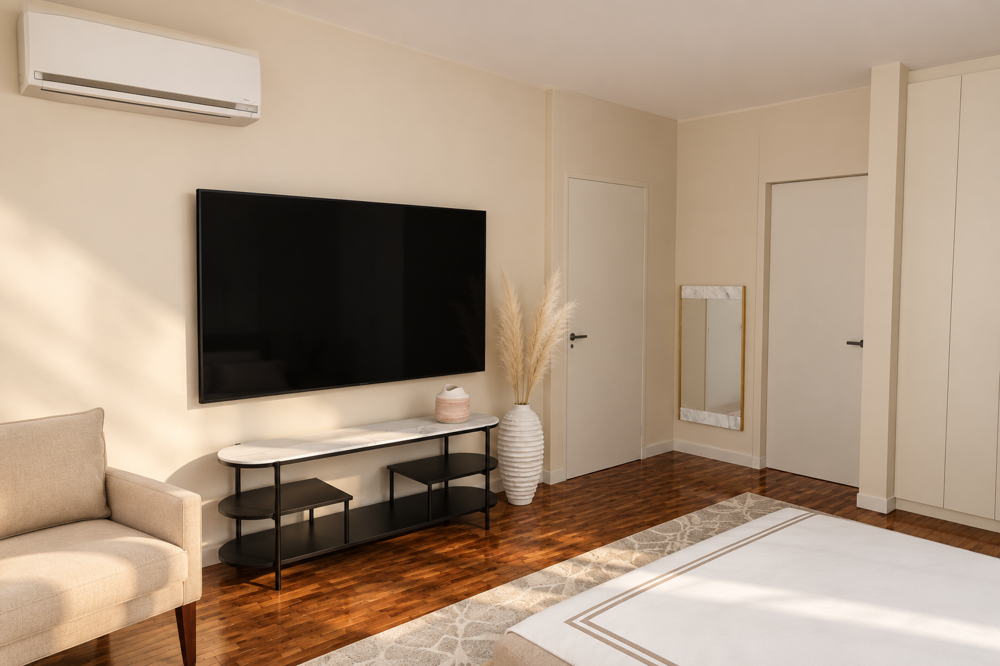
Style renders are AI images (Codex image generation, sketch-to-render) painted over the dimension-led model views below, with the original parquet photo and the supplier product photos as references: a style interpretation of each scheme, not a dimension certification; check every piece against the schedule.

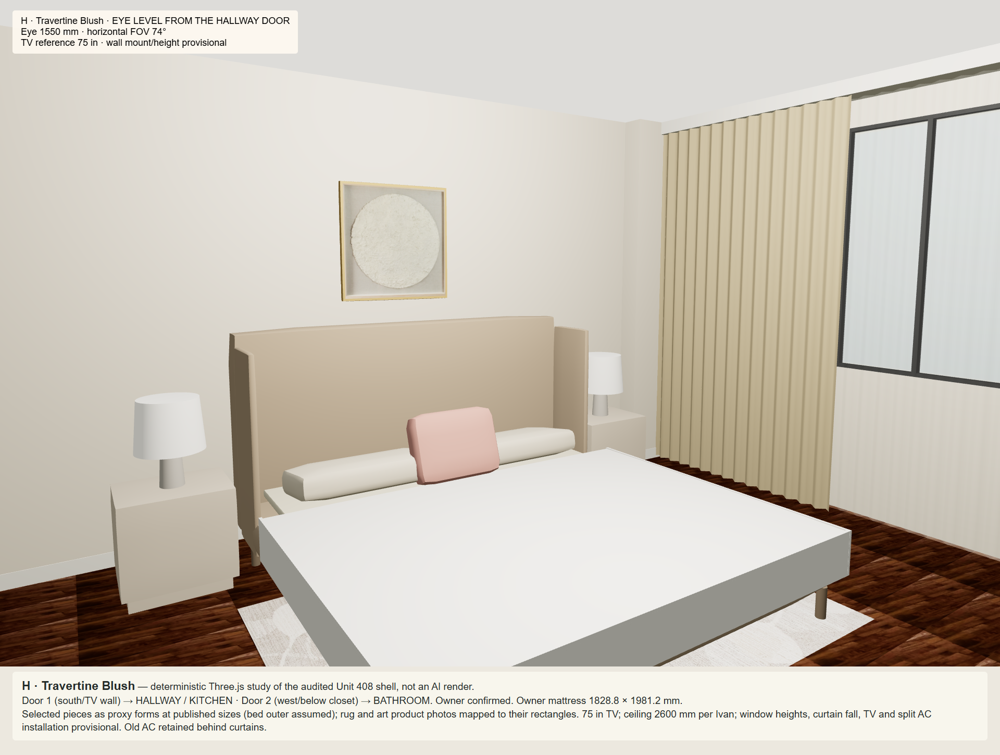

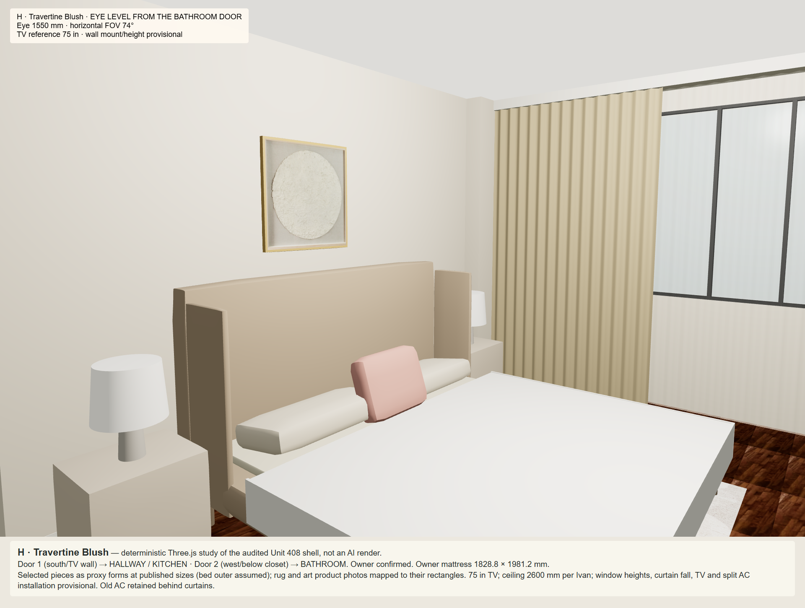

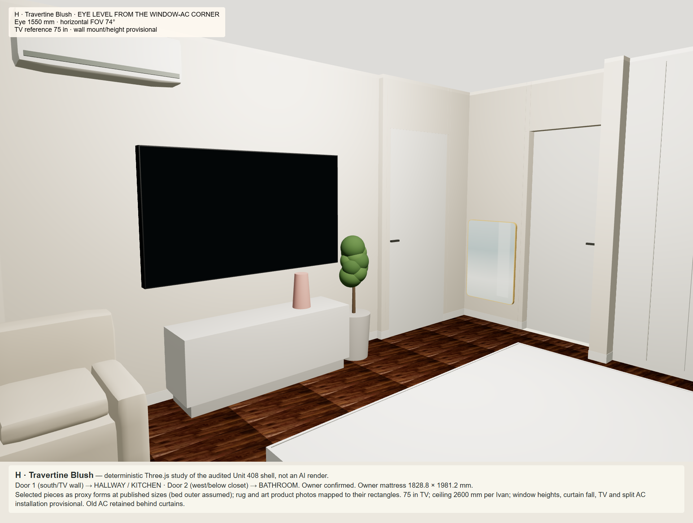
Model views are deterministic Three.js views of the audited Unit 408 shell (parquet, curtains, window, doors, closet, 75 in TV, new split AC) with the selected pieces as proxy forms at published or assumed sizes and the rug and art photos mapped to their rectangles; not AI renders, finishes approximate.
Elevations are scaled supplier-photo collages on the native wall, not renders; heights ILLUS. The reference board contains supplier product photographs.

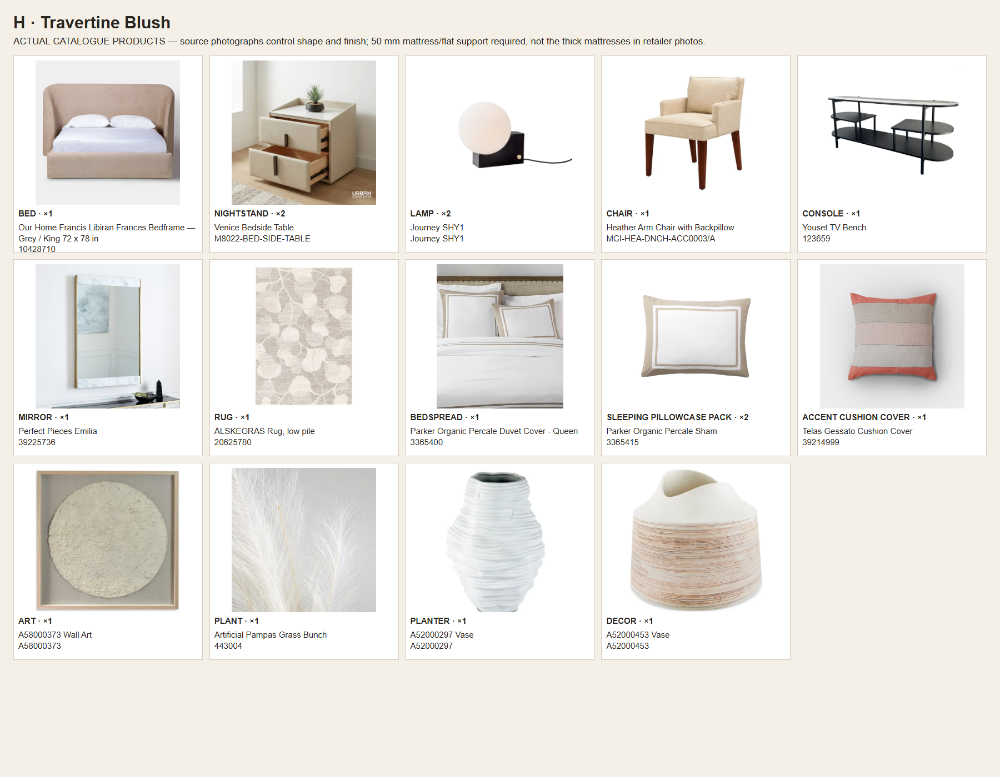

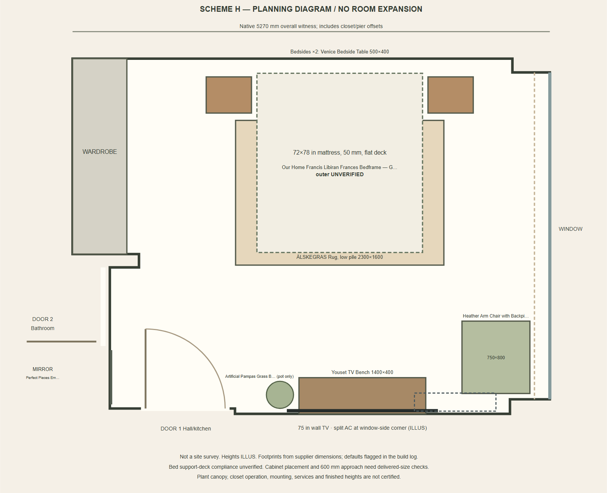
Space & fit
- Venice bedsides 500×400 each side of the Frances King (published King outer not confirmed; fit uses the mattress envelope plus wings).
- Youset 1400 mm console passes the short-console rule.
- Emilia 600 mm mirror on the 690 mm return leaves ≈ 45 mm each side.
- ÄLSKEGRAS 160×230 rug leaves parquet margins on all sides.
Every scheduled itemDirection H · selected pieces14 rows
14 scheduled items
| Starred | Piece & exact variant | Qty / scheme | Unit price | Line price | Source & fulfillment |
|---|---|---|---|---|---|
bedOur Home Francis Libiran Frances Bedframe — Grey / King 72 x 78 inGrey / King 72 x 78 in Dimensions & source notesNotes: Francis Libiran Frances: big curved wraparound headboard with deep wings and a tall upholstered base. Listed colour Grey; the supplier photo reads warm sand-taupe — colour gate before ordering. Deck continuity for a 50 mm mattress UNVERIFIED → REQUIRED-FLAT-DECK applies. King outer size not published. Price basis: Our Home Shopify product JSON, King 72×78 variant |
1H | ₱54,950Source price: 2026-10-21 | ₱54,950 | Supplier JSON available=True (read 21 Oct 2026) | Cebu delivery unconfirmedSupplier page ↗ | |
nightstandVenice Bedside TableBedside Table; SKU M8022-BED-SIDE-TABLE Dimensions & source notesDimensions (mm): width: 500; depth: 400; height: 500 Notes: Venice bedside: beige PU-leather two-drawer body with a sintered-stone top, 500×400×500; closed storage. Price basis: per listed simple product |
2H | ₱14,950Source price: 2026-09-08 | ₱29,900 | In stock according to source | Cebu delivery: unconfirmed | price date 2026-09-08 | Urban ConceptsSupplier page ↗ | |
lampJourney SHY1Silk Grey (listing variant Black, SKU DS001830; same price to confirm) Dimensions & source notesDimensions (mm): width: 180; height: 240 Notes: Journey SHY1: opal glass globe resting on a small block, Silk Grey; soft ambient glow. Price basis: Per selected retailer listing variant; PHP amount matched public feed and individual product page JSON. |
2H | ₱28,600Source price: 2026-09-10 | ₱57,200 | Available online | Cebu delivery: unconfirmed | price date 2026-09-10 | &TraditionSupplier page ↗ | |
chairHeather Arm Chair with BackpillowHeather Arm Chair with Backpillow; Beige; official listing SKU MCI-HEA-DNCH-ACC0003/A Dimensions & source notesNotes: Upholstered beige armchair with square arms, a loose back pillow and dark tapered legs: soft, quiet seat in the window corner. Swap: ISMANTORP claimed by set JKL. Price basis: Per selected exact variant Beige; published PHP variant price, not a from-price. |
1H | ₱9,500Source price: 2026-09-09 | ₱9,500 | In stock according to source | Cebu delivery: unconfirmed | price date 2026-09-09 | MejoreSupplier page ↗ | |
consoleYouset TV BenchWhite Marble (listed variant Black Marble SKU 123659; White Marble SKU to confirm) Dimensions & source notesDimensions (mm): width: 1400; depth: 400; height: 550 Notes: Two-level oval TV bench with marble-look tops on a black frame, 1400×400×550. Order White Marble. Price basis: per listed item; selected exact variant |
1H | ₱3,430Source price: 2026-09-08 | ₱3,430 | In stock according to source | Cebu delivery: unconfirmed | price date 2026-09-08 | Mandaue FoamSupplier page ↗ | |
mirrorPerfect Pieces EmiliaDefault Title Dimensions & source notesDimensions (mm): width: 600; depth: 35; height: 900 Notes: Emilia wall mirror with white-marble bands top and bottom and slim brass sides, 600×900. Price basis: Official public online catalog price for the selected variant; per item. Cebu branch quotation and delivered total unconfirmed. |
1H | ₱14,950Source price: 2026-09-10 | ₱14,950 | Online listing available | Cebu delivery: unconfirmed | price date 2026-09-10 | Perfect PiecesSupplier page ↗ | |
 rugÄLSKEGRAS Rug, low pileÄLSKEGRAS Rug, low pile, gray beige/leaf pattern, 160x230 cm; article 20625780 Dimensions & source notesDimensions (mm): width: 1600; depth: 2300 Notes: Low-pile gray-beige leaf-pattern rug 160×230 cm; soft and quiet with parquet margins. Price basis: Official Philippine product-page price for the complete selected listing/variant; included quantity follows the exact specification variant. Delivery and assembly are additional. |
1H | ₱9,999Source price: 2026-09-10 | ₱9,999 | In stock according to source | Cebu delivery: unconfirmed | price date 2026-09-10 | IKEASupplier page ↗ | |
bedspreadParker Organic Percale Duvet Cover - QueenSimply Taupe (SKU 3365400); Queen listing, King to confirm Dimensions & source notesNotes: White organic percale duvet cover with a double sand-taupe border band (Simply Taupe, SKU 3365400, the record's own SKU). Photo is the supplier's Simply Taupe variant image (research/variant-photos/parker-3365400-1.jpg). Listing is Queen: King size to confirm. Price basis: Official online store price for this exact variant (products.json variant 43137160413323: price 18500, compare-at none); per listed unit as titled |
1H | ₱18,500Source price: 2026-10-20 | ₱18,500 | online_variant_available_cebu_stock_unconfirmed | Cebu delivery: unconfirmed | price date 2026-10-20 | Pottery BarnSupplier page ↗ | |
sleeping pillowcase packParker Organic Percale ShamSimply Taupe (SKU 3365415; frozen record lists Seaglass SKU 3365414, same ₱2,950) Dimensions & source notesNotes: Matching Parker percale shams, white with a sand-taupe flange (Simply Taupe, SKU 3365415, same price as the Seaglass record SKU 3365414). Photo is the supplier's Simply Taupe variant image. Price basis: Official online store price for this exact variant (products.json variant 43090495733899: price 2950, compare-at none); per listed unit as titled |
2H | ₱2,950Source price: 2026-10-20 | ₱5,900 | online_variant_available_cebu_stock_unconfirmed | Cebu delivery: unconfirmed | price date 2026-10-20 | Pottery BarnSupplier page ↗ | |
accent cushion coverTelas Gessato Cushion CoverCoral / Stripe Dimensions & source notesNotes: Gessato cushion cover, coral-blush and grey stripe: the blush accent. Price basis: Official public online catalog price for the selected variant; per item. Cebu branch quotation and delivered total unconfirmed. |
1H | ₱1,799.78Source price: 2026-09-10 | ₱1,799.78 | Online listing available | Cebu delivery: unconfirmed | price date 2026-09-10 | Telas de MercatoSupplier page ↗ | |
artA58000373 Wall ArtA58000373 Wall Art; manufacturer SKU A58000373; Default Title; Beige Dimensions & source notesDimensions (mm): width: 698.5; depth: 31.75; height: 698.5 Notes: Framed round stone-textured relief 698×698 in beige: the travertine note on the wall. Price basis: Per exact listed official Philippine storefront variant; verify quantity/configuration in listing. Cebu branch quotation is not established. |
1H | ₱10,500Source price: 2026-09-10 | ₱10,500 | online_variant_available_cebu_stock_unconfirmed | Cebu delivery: unconfirmed | price date 2026-09-10 | AshleySupplier page ↗ | |
plantArtificial Pampas Grass BunchArtificial Pampas Grass Bunch; Single listed configuration; published SKU 443004; Shopify variant 39817706438849 Dimensions & source notesDimensions (mm): height: 1143 Notes: Artificial pampas grass bunch, about 1.1 m, standing in the tall cream vase on the floor beside the console. Price basis: Per selected Philippine listing configuration; set quantities, covers and inserts follow exact title. Published PHP price excludes unquoted delivery/crating/assembly. |
1H | ₱999Source price: 2026-09-10 | ₱999 | Online listing available | Cebu delivery: unconfirmed | price date 2026-09-10 | Crate & BarrelSupplier page ↗ | |
planterA52000297 VaseA52000297 Vase; manufacturer SKU A52000297; Default Title; White Dimensions & source notesDimensions (mm): width: 292.1; depth: 266.7; height: 438.15 Notes: White rippled sculptural ceramic vase 292×267×438 on the floor beside the console, holding the pampas. Swap: Alura tall vase claimed by set JKL. Price basis: Per exact listed official Philippine storefront variant; verify quantity/configuration in listing. Cebu branch quotation is not established. |
1H | ₱10,100Source price: 2026-09-10 | ₱10,100 | online_variant_available_cebu_stock_unconfirmed | Cebu delivery: unconfirmed | price date 2026-09-10 | AshleySupplier page ↗ | |
decorA52000453 VaseA52000453 Vase; manufacturer SKU A52000453; Default Title; Beige/White Dimensions & source notesDimensions (mm): width: 206.248; depth: 177.8; height: 206.248 Notes: Ceramic vase with blush-terracotta bands, 206×178×206: the one blush vessel. Price basis: Per exact listed official Philippine storefront variant; verify quantity/configuration in listing. Cebu branch quotation is not established. |
1H | ₱5,200Source price: 2026-09-10 | ₱5,200 | online_variant_available_cebu_stock_unconfirmed | Cebu delivery: unconfirmed | price date 2026-09-10 | AshleySupplier page ↗ |


Direction I
Plum Lacquer
Charcoal button-tufted wingback Griffin II on a walnut drawer base, dressed in a quiet grey quilt cover with a plum-and-lilac handwoven Pintig cushion and a 1.8 m dark-red eucalyptus branch in a smoked-grey glass floor vase. Dark case goods: black-brown KULLEN two-drawer bedsides and a black Sigma Senor console. Smoked glass is the light: HÖGVIND grey-glass table lamps and the matching three-lamp HÖGVIND pendant. A dark-grey Kelly swivel tub chair, a black wavy Sabrina floor mirror, a dark RÅVAROR stripe flatweave with fine wine-red lines and one large black-and-grey abstract canvas over the bed. Squint phrase: dark lacquer, plum, smoked glass.

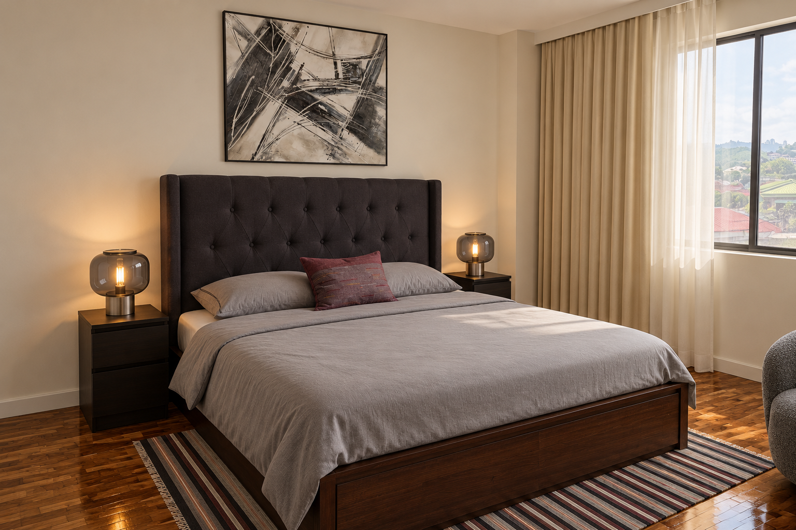

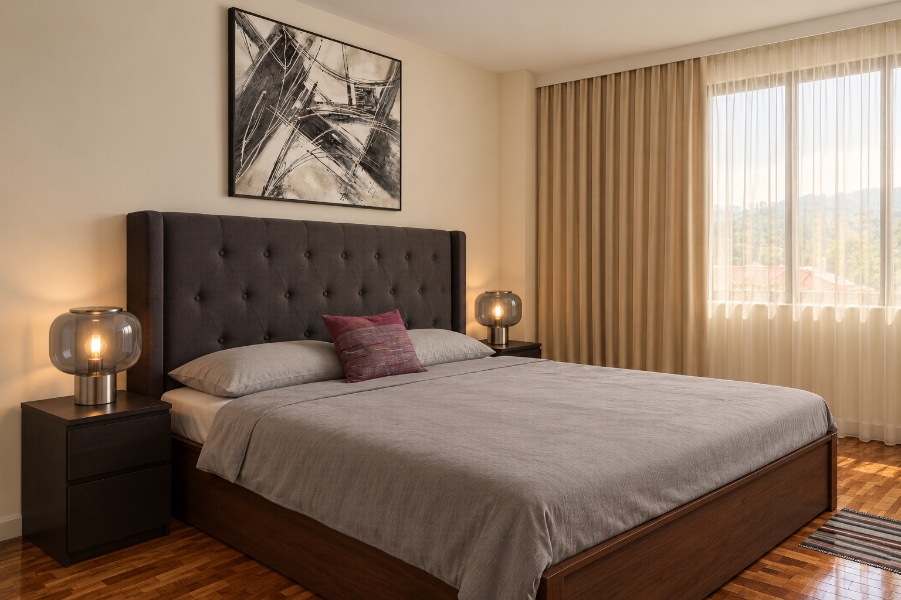

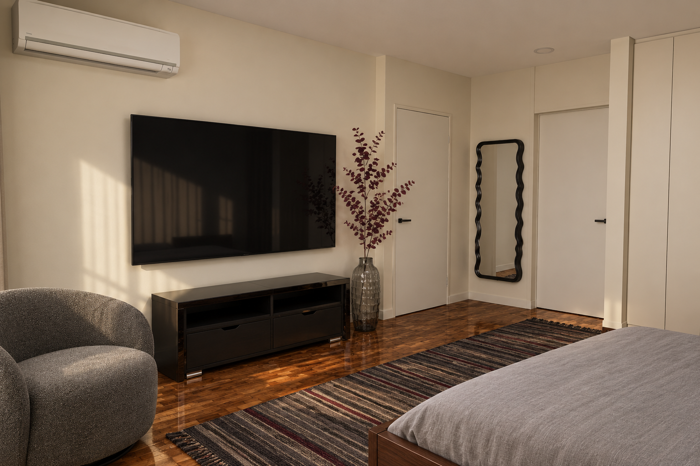
Style renders are AI images (Codex image generation, sketch-to-render) painted over the dimension-led model views below, with the original parquet photo and the supplier product photos as references: a style interpretation of each scheme, not a dimension certification; check every piece against the schedule.

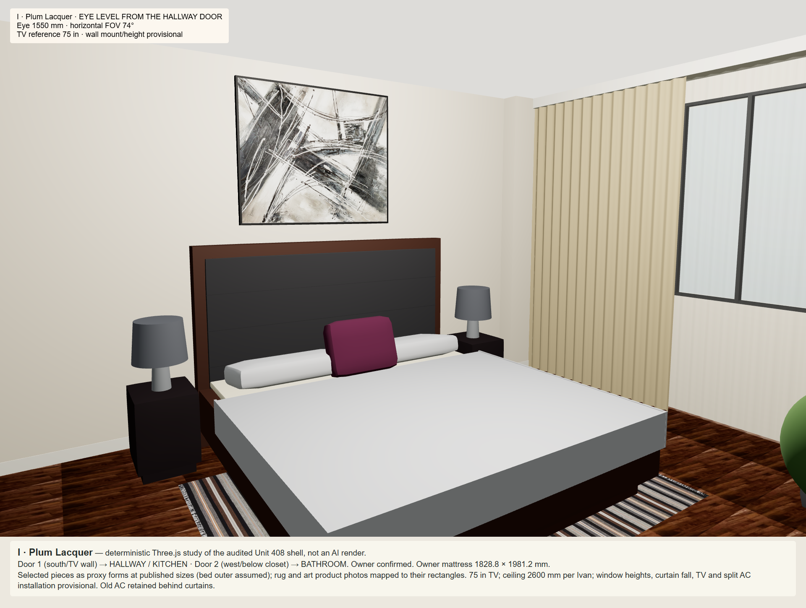

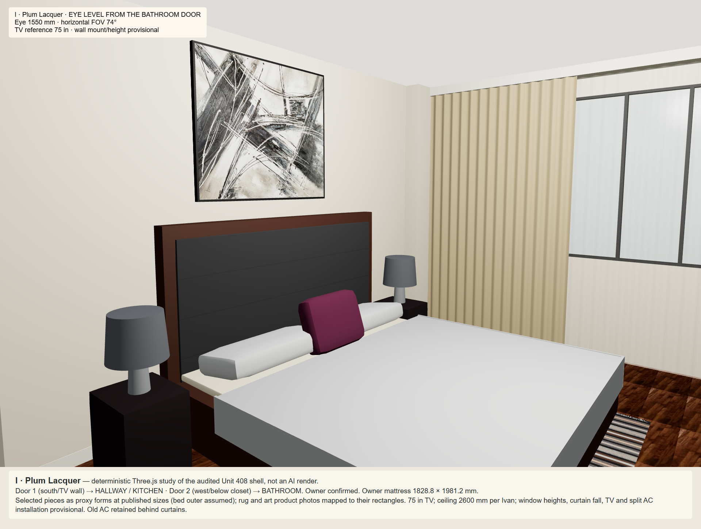

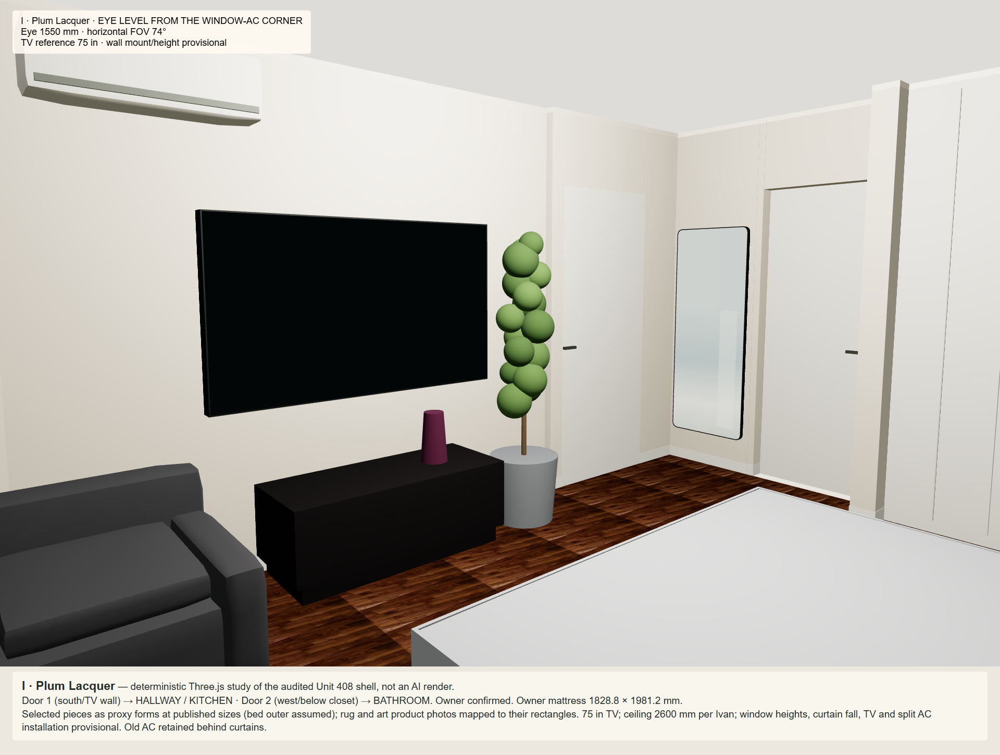
Model views are deterministic Three.js views of the audited Unit 408 shell (parquet, curtains, window, doors, closet, 75 in TV, new split AC) with the selected pieces as proxy forms at published or assumed sizes and the rug and art photos mapped to their rectangles; not AI renders, finishes approximate.
Elevations are scaled supplier-photo collages on the native wall, not renders; heights ILLUS. The reference board contains supplier product photographs.

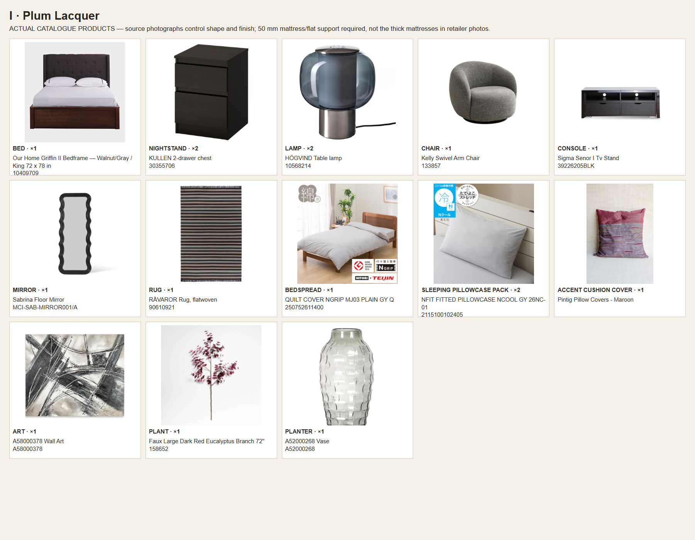

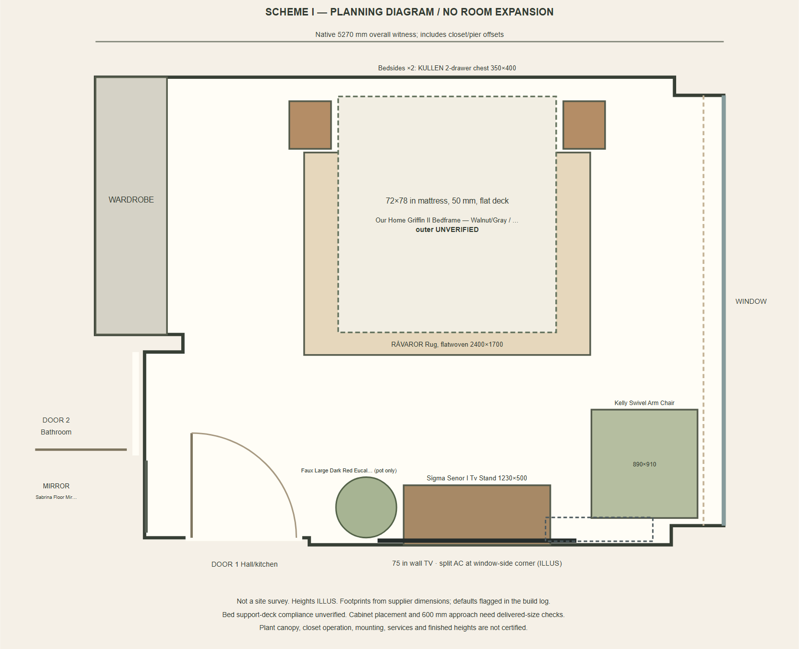
Space & fit
- KULLEN bedsides 350×400 each side of the Griffin II King (drawer base, slats: CONDITIONAL flat deck).
- Sigma Senor I 1230 mm console passes the short-console rule.
- Sabrina 606 mm floor mirror on the 690 mm return leaves ≈ 42 mm each side.
- Kelly 890×910 tub chair is over the 850 mm guide; conditional like F's LANDSKRONA — confirm the window-corner clearance.
Every scheduled itemDirection I · selected pieces13 rows
13 scheduled items
| Starred | Piece & exact variant | Qty / scheme | Unit price | Line price | Source & fulfillment |
|---|---|---|---|---|---|
bedOur Home Griffin II Bedframe — Walnut/Gray / King 72 x 78 inWalnut/Gray / King 72 x 78 in Dimensions & source notesNotes: Griffin II: charcoal button-tufted wingback headboard on a walnut-stained solid-wood drawer base. Kiln-dried slats: CONDITIONAL — a continuous flat deck board over the slats is REQUIRED for the 50 mm mattress. Chosen by a bounded public search (research/king-beds/SEARCH-LOG.md). Price basis: Our Home Shopify product JSON, King 72×78 variant |
1I | ₱49,455Source price: 2026-10-21 | ₱49,455 | Supplier JSON available=True (read 21 Oct 2026) | Cebu delivery unconfirmedSupplier page ↗ | |
 nightstandKULLEN 2-drawer chestKULLEN 2-drawer chest, black-brown, 35x49 cm; article 30355706 Dimensions & source notesDimensions (mm): width: 350; depth: 400; height: 490 Notes: Black-brown closed two-drawer chest 350×400×490. Swap: no dark gloss/lacquer closed bedside in the catalogue. Price basis: Official Philippine product-page price for the complete selected listing/variant; included quantity follows the exact specification variant. Delivery and assembly are additional. |
2I | ₱1,499Source price: 2026-09-10 | ₱2,998 | In stock according to source | Cebu delivery: unconfirmed | price date 2026-09-10 | IKEASupplier page ↗ | |
 lampHÖGVIND Table lampHÖGVIND Table lamp, nickel plated/gray glass; article 10568214 Dimensions & source notesDimensions (mm): height: 250 Notes: Smoked grey glass shade on a nickel-plated base, 250 high. Catalogue status 'catalog listed': availability gate. Price basis: Official Philippine product-page price for the complete selected listing/variant; included quantity follows the exact specification variant. Delivery and assembly are additional. |
2I | ₱1,999Source price: 2026-09-10 | ₱3,998 | Catalog listed | Cebu delivery: unconfirmed | price date 2026-09-10 | IKEASupplier page ↗ | |
chairKelly Swivel Arm ChairSingle published variant; SKU 133857 Dimensions & source notesDimensions (mm): width: 890; depth: 910; height: 720 Notes: Round dark-grey swivel tub chair with wraparound arms, 890×910×720. Swap: no plum armchair in the catalogue; plum sits on the cushion. Price basis: Official public catalog price in PHP for the selected exact variant; no member discount inferred. |
1I | ₱20,450Source price: 2026-09-10 | ₱20,450 | Catalog listed | Cebu delivery: unconfirmed | price date 2026-09-10 | Mandaue FoamSupplier page ↗ | |
consoleSigma Senor I Tv StandBlack Dimensions & source notesDimensions (mm): width: 1230; depth: 500; height: 465 Notes: Black TV stand with drawers and an open niche, 1230×500×465. Price basis: Official public online catalog price for the selected variant; per item. Cebu branch quotation and delivered total unconfirmed. |
1I | ₱18,550Source price: 2026-09-10 | ₱18,550 | Online listing available | Cebu delivery: unconfirmed | price date 2026-09-10 | SigmaSupplier page ↗ | |
mirrorSabrina Floor MirrorSabrina Floor Mirror; Black; official listing SKU MCI-SAB-MIRROR001/A Dimensions & source notesDimensions (mm): width: 606; height: 1595 Notes: Wavy-framed floor mirror in Black, 606×1595, on the door return. Price basis: Per selected exact variant Black; published PHP variant price, not a from-price. |
1I | ₱25,520Source price: 2026-09-09 | ₱25,520 | In stock according to source | Cebu delivery: unconfirmed | price date 2026-09-09 | MejoreSupplier page ↗ | |
 rugRÅVAROR Rug, flatwovenRÅVAROR Rug, flatwoven, handwoven black/brown gray, 170x240 cm; article 90610921 Dimensions & source notesDimensions (mm): width: 1700; depth: 2400 Notes: Flatwoven dark brown/grey/black stripe rug with fine wine-red lines, 170×240 cm. Swap: Safi claimed first by set MNO. Price basis: Official Philippine product-page price for the complete selected listing/variant; included quantity follows the exact specification variant. Delivery and assembly are additional. |
1I | ₱11,999Source price: 2026-09-10 | ₱11,999 | In stock according to source | Cebu delivery: unconfirmed | price date 2026-09-10 | IKEASupplier page ↗ | |
 bedspreadQUILT COVER NGRIP MJ03 PLAIN GY QSingle listed variant; SKU 250752611400 Dimensions & source notesNotes: Plain grey quilt cover; King size to confirm. Swap: Uratex Wink claimed first by set MNO; no plum duvet cover in the catalogue. Price basis: Official online store price for this exact variant (products.json variant 47018405429460: price 1999, compare-at 1999); per listed unit as titled |
1I | ₱1,999Source price: 2026-10-20 | ₱1,999 | online_variant_available_cebu_stock_unconfirmed | Cebu delivery: unconfirmed | price date 2026-10-20 | NitoriSupplier page ↗ | |
sleeping pillowcase packNFIT FITTED PILLOWCASE NCOOL GY 26NC-01Single listed variant; SKU 2115100102405 Dimensions & source notesNotes: Grey fitted pillowcases. Price basis: Official online store price for this exact variant (products.json variant 48171142578388: price 389, compare-at 389); per listed unit as titled |
2I | ₱389Source price: 2026-10-20 | ₱778 | online_variant_available_cebu_stock_unconfirmed | Cebu delivery: unconfirmed | price date 2026-10-20 | NitoriSupplier page ↗ | |
accent cushion coverPintig Pillow Covers - MaroonMaroon Dimensions & source notesNotes: Pintig handwoven pillow cover, maroon-plum with lilac bands: the plum accent. Price basis: Official online store price for this exact variant (products.json variant 40651462311971: price 2999, no compare-at); per listed unit as titled |
1I | ₱2,999Source price: 2026-10-20 | ₱2,999 | online_variant_available_cebu_stock_unconfirmed | Cebu delivery: unconfirmed | price date 2026-10-20 | ANTHILL Fabric GallerySupplier page ↗ | |
artA58000378 Wall ArtA58000378 Wall Art; manufacturer SKU A58000378; Default Title; Black/Gray Dimensions & source notesDimensions (mm): width: 1219.2; depth: 34.798; height: 1022.35 Notes: One large black-and-grey gestural abstract canvas 1219×1022 over the bed. Price basis: Per exact listed official Philippine storefront variant; verify quantity/configuration in listing. Cebu branch quotation is not established. |
1I | ₱15,900Source price: 2026-09-10 | ₱15,900 | online_variant_available_cebu_stock_unconfirmed | Cebu delivery: unconfirmed | price date 2026-09-10 | AshleySupplier page ↗ | |
plantFaux Large Dark Red Eucalyptus Branch 72"Faux Large Dark Red Eucalyptus Branch 72"; Single listed configuration; published SKU 158652; Shopify variant 49052459073752 Dimensions & source notesDimensions (mm): width: 508; depth: 101.6; height: 1828.8 Notes: Faux dark-red eucalyptus branch 72 in standing in the smoked glass vase on the floor beside the console: the second plum-red note. Price basis: Per selected Philippine listing configuration; set quantities, covers and inserts follow exact title. Published PHP price excludes unquoted delivery/crating/assembly. |
1I | ₱5,949Source price: 2026-09-10 | ₱5,949 | Online listing available | Cebu delivery: unconfirmed | price date 2026-09-10 | Crate & BarrelSupplier page ↗ | |
planterA52000268 VaseA52000268 Vase; manufacturer SKU A52000268; Default Title; Gray Dimensions & source notesDimensions (mm): width: 215.9; depth: 223.52; height: 406.4 Notes: Smoked grey textured glass vase 216×224×406 on the floor beside the console, holding the eucalyptus branch. Price basis: Per exact listed official Philippine storefront variant; verify quantity/configuration in listing. Cebu branch quotation is not established. |
1I | ₱6,700Source price: 2026-09-10 | ₱6,700 | online_variant_available_cebu_stock_unconfirmed | Cebu delivery: unconfirmed | price date 2026-09-10 | AshleySupplier page ↗ |


Your shortlist
Starred pieces
Star ☆ any piece in the schedules above and it is listed here by direction with a running total. Stars are saved in this browser only. Use Copy link to send them to someone else (the link opens with the same stars) or Copy as text for a message.
No starred pieces yet.
Plain-text list
Compare the complete plan
Budgets, with the open costs visible
Quoted work and fulfillment remain unresolved. The planning ranges include the allowances below, plus 10% contingency, rounded up to ₱1,000.
| Per chosen scheme | GGraphite Steel | HTravertine Blush | IPlum Lacquer |
|---|---|---|---|
| Selected design pieces | ₱254,645 | ₱232,927.78 | ₱167,295 |
| Common essentials & room treatments | ₱120,904.50 | ₱120,904.50 | ₱120,904.50 |
| Priced schedule subtotal | ₱375,549.50 | ₱353,832.28 | ₱288,199.50 |
| Working planning range | ₱452,000 to ₱506,000 | ₱428,000 to ₱482,000 | ₱356,000 to ₱410,000 |
Planning allowances ₱35,000–₱84,000 before contingency
| Work or provision | Low | High | Basis & limits |
|---|---|---|---|
| Cebu freight,delivery and handling | ₱5,000 | ₱15,000 | Planning allowance only; no shipping rates/address allocation obtained. Overseas freight not included. |
| Split-AC installation and normal pipe/electrical provision | ₱10,000 | ₱20,000 | Planning allowance only; actual pipe length,capacity,condensate path,condenser mounting and building permissions unmeasured. |
| TV/mirror/art/ceiling fixture installation and assembly | ₱5,000 | ₱10,000 | Planning allowance only; installer must specify anchors and verify substrate. Includes no structural rebuilding. |
| Paint touch-up and site coordination | ₱5,000 | ₱12,000 | Estimator reserve, not a contractor quote. Optional curtain LED is not selected, displayed or included as a retail item. |
| REQUIRED: custom50mm mattress,72×78in | ₱4,000 | ₱12,000 | Provisional reserve only,not a manufacturer price. Exact finished50mm thickness,cover and foam specification need supplier acceptance and quotation. Replaces rejected8in mattress; not added on top of it. |
| REQUIRED unless existing deck proven compliant: custom continuous flat support | ₱6,000 | ₱15,000 | Provisional reserve only,not a contractor quote. All current bed supports unverified. Must resolve structure,bearing,fixings,recess/rail height and bed warranty. No exposed slats accepted. |
Shared foundations
Common essentials & fixed room treatments
The fixed curtains and listed technical essentials are common room provisions. Scheme letters show where each row applies; quantities are per chosen scheme.
Every scheduled itemCommon room schedule14 rows · 2 quote required
14 scheduled items
| Starred | Piece & exact variant | Qty / scheme | Unit price | Line price | Source & fulfillment |
|---|---|---|---|---|---|
bedding insertComforter & Duvet Insert WhiteVariant '54x86 inches'; SKU 123243 Dimensions & source notesNotes: Duvet insert for the scheme duvet cover (hidden; one per chosen scheme). King size to confirm. Price basis: Official online store price for this exact variant (products.json variant 43582066000050: price 980, compare-at 980); per listed unit as titled |
1G/H/I | ₱980Source price: 2026-10-20 | ₱980 | online_variant_available_cebu_stock_unconfirmed | Cebu delivery: unconfirmed | price date 2026-10-20 | Mandaue FoamSupplier page ↗ | |
| 1G/H/I | ₱51,990 | ₱51,990 | Live retailer available=true; Cebu branch allocation unconfirmedSupplier page ↗ | ||
| 1G/H/I | ₱19,631.50 | ₱19,631.50 | Live retailer available=true; Cebu branch allocation unconfirmedSupplier page ↗ | ||
 technicalTrue Vision extra-large TV wall mount TV73-69F, 60–120 in, 120 kg, VESA 400×300 listedTV73-69F (manufacturer product 5959) Dimensions & source notesNotes: Replaces the unavailable Westinghouse reference. Published 35×1005×625 mm; installer to confirm substrate, anchors, Samsung screw/spacer lengths and rear connector access. Price basis: Manufacturer current Store API price 2,990 (sale price not applied) |
1G/H/I | ₱2,990Source price: 2026-10-20 | ₱2,990 | Manufacturer store API is_in_stock:true, is_purchasable:true (technical research 20 Oct 2026) | Cebu delivery not checkedSupplier page ↗ | |
technicalMaster bedroom drapes + sheers,2 tracks,inverted pleats16 Oct2026 supplier quotation Dimensions & source notesNotes: Quoted master-bedroom discounted row. Davies Beige+voile remain owner selected, but this quote does not name exact fabric SKU; no claim of verified fabric match. Install/travel terms need reconfirmation. |
1G/H/I | ₱36,720 | ₱36,720 | DATED QUOTE - fabric identity and current scope require reconfirmationSupplier quote pending | |
technicalFinished valance/pelmet:1 of6 quoted areas22800/6 allocation Dimensions & source notesNotes: Equal allocation of quoted whole-apartment valance total22800 across6 areas. Not an independently quoted per-room price. |
1G/H/I | ₱3,800 | ₱3,800 | PLANNING ALLOCATION - supplier has not separately quoted this roomSupplier quote pending | |
technicalFour curtain pull sticks:1 of6 quoted areas11400/6 allocation Dimensions & source notesNotes: Quoted whole-apartment24sticks total11400; allocate4sticks1900. Confirm length/quantity and no-cord operation. |
1G/H/I | ₱1,900 | ₱1,900 | PLANNING ALLOCATION - supplier has not separately quoted this roomSupplier quote pending | |
technicalDVALA flat sheet, white806.211.71 Dimensions & source notesNotes: Neatly wrap50mm mattress; not an elastic fitted-sheet claim.2400×2600 less1828.8×1981.2 leaves285.6mm per side and309.4mm per end before50mm depth; ample proposed tuck. Catalogue says63–71in beds; this is a proposed thin-mattress flat wrap, verify onsite. No thick mattress/duvet inferred. |
1G/H/I | ₱699 | ₱699 | https://schema.org/InStoreOnly; Cebu allocation unconfirmedSupplier page ↗ | |
 technicalLAPPTATEL pillow, side/back sleeper604.603.72 Dimensions & source notesNotes: 2individual50×80cm sleeping pillow inserts per scheme; no health or comfort certification. |
2G/H/I | ₱399 | ₱798 | https://schema.org/InStock; Cebu allocation unconfirmedSupplier page ↗ | |
| 2G/H/I | ₱499 | ₱998 | https://schema.org/InStoreOnly; Cebu allocation unconfirmedSupplier page ↗ | ||
 technicalINNER cushion insert, white402.621.94 Dimensions & source notesNotes: One INNER 50×50 cm insert for the scheme cushion cover (G, H and I each have one cover). |
1G/H/I | ₱200 | ₱200 | https://schema.org/InStock; Cebu allocation unconfirmedSupplier page ↗ | |
 technicalSOLHETTA E27 opal LED bulb 470 lm, 2-piece pack105.914.84 Dimensions & source notesNotes: Two 2-packs per scheme for the bedside pair plus spare. Lamp socket types (Tripod HM9, Journey SHY1, HÖGVIND) are not published in the catalogue — confirm E27/E14 before purchase. |
2G/H/I | ₱99 | ₱198 | https://schema.org/InStoreOnly; Cebu allocation unconfirmedSupplier page ↗ | |
technicalMade-to-order mattress, finished 50 mm × 1828.8 × 1981.2 mmExact specification requires supplier acceptance Dimensions & source notesNotes: Real MTO service, not a verified off-the-shelf 50mm model. Reserve ₱4,000–12,000 below; never treat as free. |
1G/H/I | Quote required | Quote required | QUOTE REQUIRED; exact finished thickness not yet acceptedSupplier page ↗ | |
technicalContinuous flat bed support and any frame adaptationBed-specific engineered specification required Dimensions & source notesNotes: No slats or gaps at contact surface. Confirm load, bearing, fixings, seams, recess/rail height, finished mattress exposure, moisture requirements and warranty. Reserve ₱6,000–15,000 below. |
1G/H/I | Quote required | Quote required | QUOTE REQUIRED; all three frames conditionalSupplier quote pending |


Before ordering
Resolve these procurement gates
- No scheme is purchase-ready until the bed supplier accepts the exact 50 mm mattress on a continuous flat deck. Gavino (G) shows availability=false and only White in photos; Frances (H) is listed Grey but photographs sand-taupe; Griffin II (I) has slats over a drawer base and needs a deck board. King outer sizes are unpublished for Gavino and Frances (plans use assumed outers).
- Prices are frozen catalogue references (live-Airtable snapshot 20 Oct 2026) with each line's own price date; beds were read from supplier JSON on 20–21 Oct 2026. Product existence and photos are verified; exact Cebu stock, address delivery and checkout totals are not.
- Colour, variant and size gates: Journey SHY1 Silk Grey (listing variant Black); Youset White Marble (listed Black Marble); Parker duvet is a Queen listing (King to confirm); every duvet cover and insert in King; Kartell Clap footprint; Tripod HM9 height; HÖGVIND table lamp and Kelly chair are catalogue-listed only; Kelly 890 mm width is conditional in the window corner.
- TV mount is the True Vision TV73-69F; installer to confirm substrate, anchors and Samsung fixings.
- Curtain ₱42,420 is the carried 16 October quote reference: ₱36,720 master treatment plus ₱3,800 valance and ₱1,900 sticks allocations. Remeasurement quote required.
- Trade/freight/mattress/deck reserves total ₱35,000–84,000 as estimator allowances, not supplier quotations. 10 % contingency added, totals rounded up to the next ₱1,000.
- Boards, measured plans and the AI style renders (sketch-to-render over the deterministic model views, read for character, not millimetres) are the review basis.
Source notes
- Catalogue of record: frozen live-Airtable snapshot of 20 Oct 2026 (tmp/408-bedroom-fresh-live-airtable-2026-10-20). No Airtable writes.
- 40 visible selections across G/H/I, each with a supplier photo copied into dist/assets/products; no visible model or model family repeats across G, H, I or the twelve earlier schemes, and sibling-set claims (JKL, MNO) were respected (UNIQUENESS-MATRIX.md).
- Product photos are unaltered retailer references; the Parker duvet and sham use the supplier's own Simply Taupe variant images. Plans use published dimensions where available and flag defaults where not.
- PH retailer routes establish real-product sourcing. Cebu fulfilment requires checkout/branch confirmation; no supplier contact or order has been made.